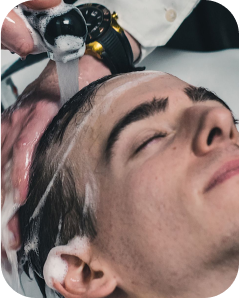
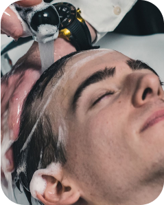

Services
Shaving
Di SaTo Cut barbershop anda juga dapat merapikan atau membersihkan kumis dan janggut. Disini terdapat berbagai macam cara merapikan kumis atau janggut kalian. Diantaranya adalah merapikan dengan alat pisau cukur atau gunting cukur khusus. Selain itu kalian juga dapat meminta untuk menambahkan busa cukur terlebih dahulu sebelum dirapikan.


Hair Treatment
Tidak hanya membuat penampilan anda makin tampan, di barbershop kami juga menyediakan pelayan hait treatment guna menjaga kesehatan rambut kalian. Adapun treatment yang disediakan adalah vitamin rambut, hairloss treartment dan masih banyak lainnya
Haircut
Di SaTo Cut barbershop, haircut atau potong rambut menjadi layanan utama yang ada pada barbershop kami. Barber kami telah menyediakan album yang berisikan model-model rambut terbaik di barbershop kami. Selain melihat album model rambut kalian juga dapat me-request pada barberman kita sesuai dengan keinginan kalian, dan tentunya hasilnya tidak akan mengecewakan.

Hair Coloring
Setelah puas dengan potongan rambut di SaTo Cut Barbershop, kalian dapat lebih memaksimalkan ketampanan kalian dengan merubah warna rambut kalian untuk membuat suasana yang baru. Proses ini dapat dilakukan diwaktu yang bersamaan setelah anda melakukan potong rambut di barbeshop kami ataupun di hari yang berbeda dengan hari anda potong rambut dengan ketentuan sudah melakukan reservasi atau pemesanan.
 
